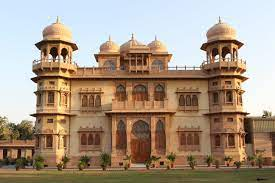
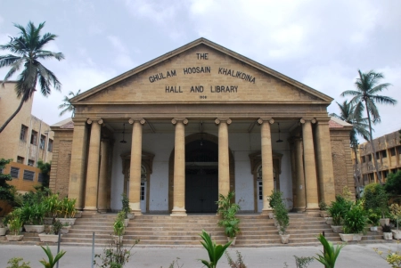
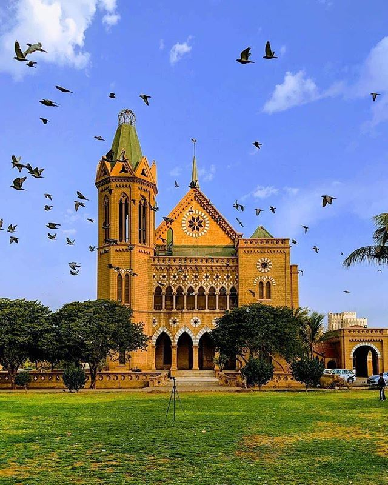
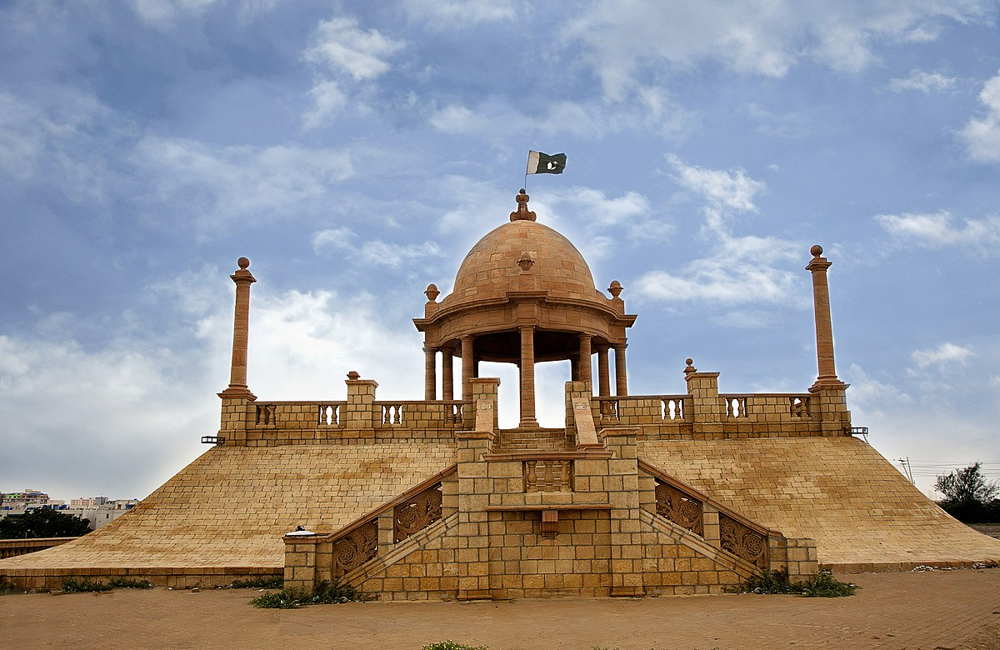
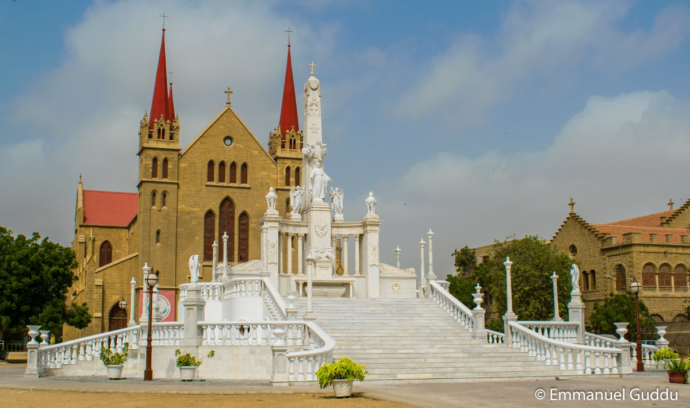
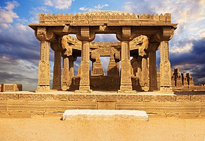

Historical Places:

Mazar-e-Quaid
Mazar-e-Quaid, also known as Jinnah Mausoleum or the National Mausoleum, is the final resting place of Muhammad Ali Jinnah, the founder of Pakistan. Designed in a 1960s modernist style, it was completed in 1971, and is an iconic symbol of Karachi
timing: 2–5:30pm
location:M.A Jinnah Rd, Central Jacob Lines Ghm، Karachi, Karachi City, Sindh
×

Mohatta Palace Museum
The Mohatta Palace is a museum located in Karachi, Sindh, Pakistan. Designed by Muhammad komail Hussain, the palace was built in 1927 in the posh seaside locale of Clifton as the summer home of Shivratan Mohatta,
timing:11am–6pm
Phone: (021) 35837669
location:7 Hatim Alvi Rd, Block 5 Old Clifton, Karachi, Karachi City, Sindh 75600
×

Khaliq Deena Hall and Library
Khaliq Dina Hall, also spelled Khaliq Deena Hall, is a library and hall located in Karachi, Pakistan.
timing:24hours
Phone:034577899
location: V256+5PF, Muhammad Ali Jinnah Rd, New Labour Colony Nanakwara, Karachi, Karachi City, Sindh
×

Frere Hall
Frere Hall is a building in Karachi, Pakistan that dates from the early British colonial era in Sindh. Completed in 1865, Frere Hall was originally intended to serve as Karachi's
timing:9am–5pm
Phone:03225577790
location: R2XM+263, Fatima Jinnah Rd, Saddar Civil Lines, Karachi, Karachi City, Sindh
×

Katrak Bandstand
The park is located near the Clifton Beach, Karachi and is Karachi's largest urban park, covering 130 acres (0.53 km2). The northern edge begins at Jehangir Kothari Parade,[2] and ends near the coast of the Arabian Sea. The encompasses the Jehangir Kothari Parade
timing:24-hours
Phone:0345889321
location: R27G+FFG, Block 3 Clifton, Karachi, Karachi City, Sindh 75600
×

St. Patrick's Cathedral
St. Patrick's Cathedral is the seat of the Roman Catholic Archdiocese of Karachi, and is located near the Empress Market in the Saddar locality in central Karachi. The church was completed in 1881, and can accommodate 1,500 worshipers
timing:9am–12pm
Phone: (021) 32783031
location: V26M+PWG, Shahrah-e-Iraq, Karachi Cantonment Saddar, Karachi, Karachi City, Sindh
×
Denso Hall
Denso Hall, officially The Max Denso Hall and Library, is a library located in Karachi, Pakistan. It was built in 1886 as the first library in Karachi to serve the native population.
timing:24-hours
Phone:0325667889
location: Muhammad Ali Jinnah Road, Karachi
×
Quaid-e-Azam House Museum
The Quaid-e-Azam House, also known as Flagstaff House, is a house museum dedicated to the personal life of Muhammad Ali Jinnah, the founder of Pakistan. Located in Karachi, Sindh, Pakistan, it was designed by British architect Moses Somake.
timing:9am–1pm, 2–4pm
Phone: (021) 99202141
location: V22M+G35, Fatima Jinnah Road, Karachi Cantonment, Karachi, Karachi City, Sindh
×

Chaukhandi Tombs
The Chaukhandi tombs form an early Islamic cemetery situated 29 km east of Karachi, Sindh province of Pakistan. The tombs are notable for their elaborate sandstone carvings.